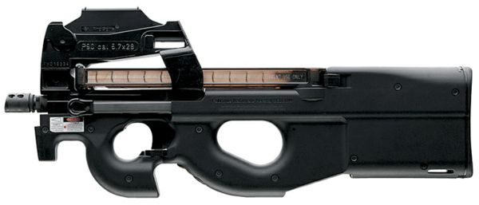

영문 명을 해석하면 기관총에 준하는 무기라는건데. 대체로 소총에 비해 가벼우며 성능과 명중력은 권총보다 좋지만 실제탄환은 권총탄환을 그대로 사용합니다. (물론 전용탄환을 쓰는 총도 있음) 자주 보는총은 MP5, P90, Uzi, 등이 있겠죠. 사진을 보면 이해가 쉽겠죠.?
기관단총도 유효사거리가 100m를 넘기 힘듭니다. 하지만 이총을 쓰는 이유는 소총(아래 참고) 보다 휴대하기 편하고 권총보다는 성능이 좋아서 넓은지역에서의 전투보다는 50M이내의 거리에서 싸울일이 많은, 실내전 (실내에서 벌어지는 전투)에서 유용하기 때문입니다. 대부분 분당 600발 (초당 10발이 나가는것)연사력을 가지고 있지만 분당 1200발 이나가는 총도 있습니다.